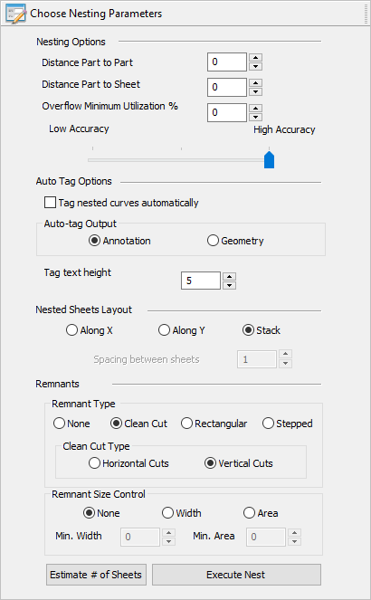
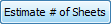
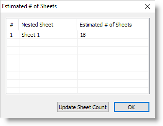

This tab allows you to specify nesting parameters and lets you execute and preview the nest.
 Nesting Browser - Choose Nesting Parameters tab |
Choose from the following nesting options:
|
The tagging option causes a number to be shown with each nested part when the nest is accepted or committed. The number is the sequence number assigned to the selected Part in the Parts List of the Nesting Browser. Tag Nested Curves Automatically By default, tagging is OFF, but may be activated by checking this box on the dialog. Auto-Tag Output There are two forms of tagging that can be generated, Annotation and Geometry. In both cases, the tag number is located with its origin at the center of the individual nested part in the nest. Annotation The tag number is shown on the screen as graphics display text only. The height of the annotation text is dynamically controlled by the Dimension Text Height. Geometry The tag number is created as geometry curves, which are selectable as geometry. Tag Text Height Enter the Text Height for tagging. The value entered in this height field is in the units of the part file, either Inches or Metric.
|
You can choose from the following nested sheet layout options. These options are enabled when you elect to create each sheet in a separate layer or group from the Commit Nest tab. Along X / Along Y Arranges all sheets along the X or Y direction depending on your selection.
Stack This option stacks the geometry. This option is disabled if None is selected from the Preview and Commit Nest tab under the Nested Sheets Geometry Grouping section.
Spacing between sheets If Along X or Along Y is selected, enter the linear spacing between each sheet. |
|
Selecting this button will produce an on-screen report showing how many of each of the sheets will be needed for the total nesting.   Dialog Box: Estimated # of Sheets Update Sheet Count Your report is listed here. If your total number of sheets is less than the Estimated # of Sheets listed in the report, you can select the Update Sheet Count button to adjust your sheet count automatically. |
Selecting this button computes the nest based on sheets, parts and nesting parameters specified. This does not display the resultant nested parts within the sheet. Selecting this button will move you to the Preview Nest tab automatically. |